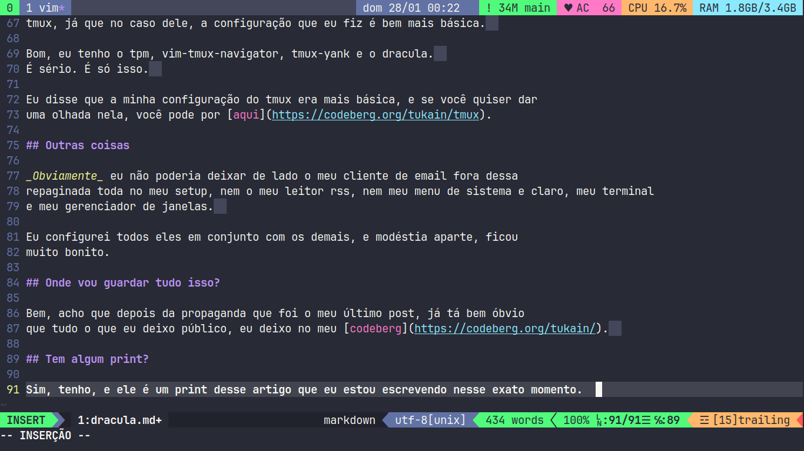

Dracula
Table of Contents
Drácula!
Você já deve ter percebido, mas eu refiz a paleta de cores do site. Eu coloquei a paleta de cores Dracula, mas não foi só por aqui não, eu coloquei ela por todo o meu setup, que inclusive eu fiz várias modificações.
Vim
Eu sei que no meu último post eu disse que tentaria não usar nenhum plugin no vim, mas bem, agora estou. Para ser mais preciso, eu coloquei 9 plugins e 10 paletas de cores.
Paletas de cores do Vim
Vamos lá, hora de listar as paletas. Elas são:
- Onedark
- Dracula
- Catppuccin (todas as variantes)
- Srcery
- Gruvbox
- Everforest
- Gotham
- TokyoNight
- Nord
- Github
Bastante coisa, pelo menos para os meus padrões.
Plugins do Vim
Ok, hora dos plugins:
- Airline
- Airline-theme
- Vim-Lsp
- Lsp-settings
- Vim-bufferline
- fzf
- fzf.vim
Ainda falta um plugin, mas ele é algo relacionado a outra coisa que eu configurei junto de tudo isso.
TMUX!
Pois é, eu também tenho uma configuração do tmux agora, e o plugin do vim que eu não mencionei é o vim-tmux-navigator, ele faz com que seja possível uma transição fluida entre os painéis do tmux e os buffers do vim.
Plugins do tmux
Lógico que eu coloquei alguns plugins no tmux também, e óbviamente o plugin do Dracula é um deles, mas tem também outros além desse.
Mas, diferente do vim, eu não vou precisar de uma lista para os plugins do tmux, já que no caso dele, a configuração que eu fiz é bem mais básica.
Bom, eu tenho o tpm, vim-tmux-navigator, tmux-yank e o dracula. É sério. É só isso.
Eu disse que a minha configuração do tmux era mais básica, e se você quiser dar uma olhada nela, você pode por aqui.
Outras coisas
Obviamente eu não poderia deixar de lado o meu cliente de email fora dessa repaginada toda no meu setup, nem o meu leitor rss, nem meu menu de sistema e claro, meu terminal e meu gerenciador de janelas.
Eu configurei todos eles em conjunto com os demais, e modéstia aparte, ficou muito bonito.
Onde vou guardar tudo isso?
Bem, acho que depois da propaganda que foi o meu último post, já tá bem óbvio que tudo o que eu deixo público, eu deixo no meu codeberg.
Tem algum print?
Sim, tenho, e ele é um print desse artigo que eu estou escrevendo nesse exato momento. 
Fin
Enfim, é isso, te vejo no próximo post!